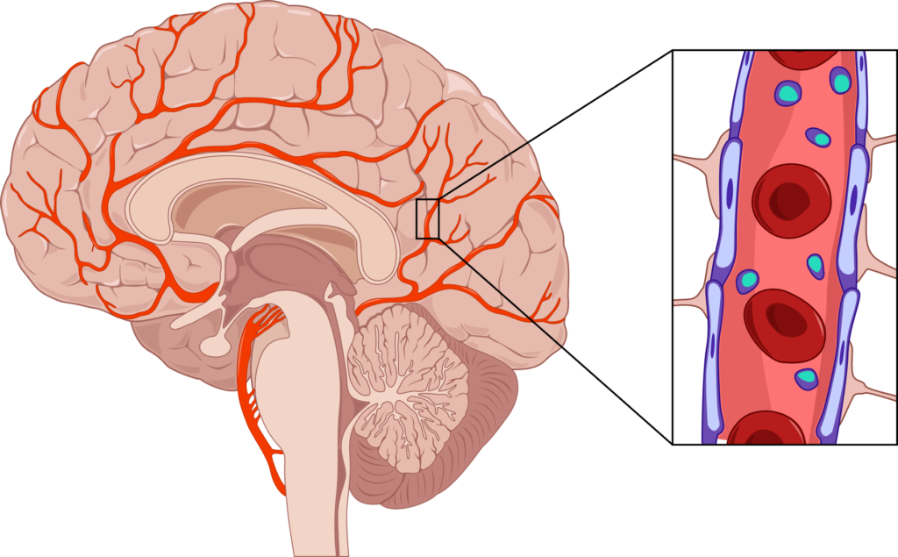

Table of Contents
1. Table of Contents
2. Once upon a time …
The first time I learned about Blood-Brain Barrier, I was a kid perscribed with Cetirizine 10mg. After I told my doctor I was feeling sleepy after the doze, he roughly explained to me the other medicines would make me even more sleepy.
I moved on but didn't really understand how a pill for my cat allergiies can have that side-effect. I mean, I was thinking I should rather be awake and energitic because these "evil allergy germs" must've been dissolved?
Of course, now I know there's such a thing no evil ellergy germ and as an engineer it's interesting to know why certain drugs makes ones feel
- tired
- excited
- awake
It's all related to the brain. Brain has a barrier that selectively allows substances to pass through your cerebral blood vessels into the brain.
3. BBB(Blood-Brain Barrier)
The Blood-Brain Barrier (BBB) is the selective barrier that separates the blood from the brain's extracellular fluid in the central nervous system (CNS). It's there to protect the brain from harmful substances, while allowing essential nutrients to get into the brain.

Figure 1. Taken from "Cordance Medical"In general, lipid soluble molecules, which are "oil-friendly", are the let-in substnaces while water-soluble molecules aren't. That being said, some of the drugs happen to be easily crosisng the BBB, while the other kinds of drugs are specifically designed to be.
4. Well-known drugs that enter the BBB with side-effects
4.1. Caffein and coffee
The most loved drug among the people today, arguably I think, is Caffein. Caffein goes through the BBB, blocking adenosine receptors.
When your brain gets adenosine, it makes you calm. However, caffein blocks its receptors. Therefore your brain can't calm, resulting in a state of alertness. Too much caffein can give you excessive alertness, thus giving you a side-effect of insomnia, as follows:
Step 1: Caffeine Ingestion
|
v
+-----------------------+
| Caffeine enters the |
| blood stream |
+-----------------------+
|
v
Step 2: Caffeine Crosses the BBB
|
v
+-----------------------+ +-----------------------+
| Caffeine crosses | -> | Caffeine reaches |
| the Blood-Brain | | the brain |
| Barrier | +-----------------------+
+-----------------------+ |
v
Step 3: Blocking Adenosine Receptors
|
v
+-----------------------+ +-----------------------+ +-----------------------+
| Caffeine binds to | -> | Adenosine receptors | -> | Blocking adenosine |
| adenosine receptors | | are blocked | | reduces the calming |
+-----------------------+ +-----------------------+ | effect |
+-----------------------+
|
+------------------------------------------+
|
v
Step 4: Increased Alertness
|
v
+-----------------------+ +-----------------------+
| State of alertness | -> | Excessive alertness |
| is maintained | | can lead to insomnia |
+-----------------------+ | and anxiety |
+-----------------------+
4.2. Adderall
The notorious Adderall also uses a similar mechanism.
It goes thorugh the BBB, directly stimulates the release of dopamine, disrupting the brain's natural reuptake process. That leads to hyper alertness (stronger than caffein to simply block a bit of adenosine receptors).